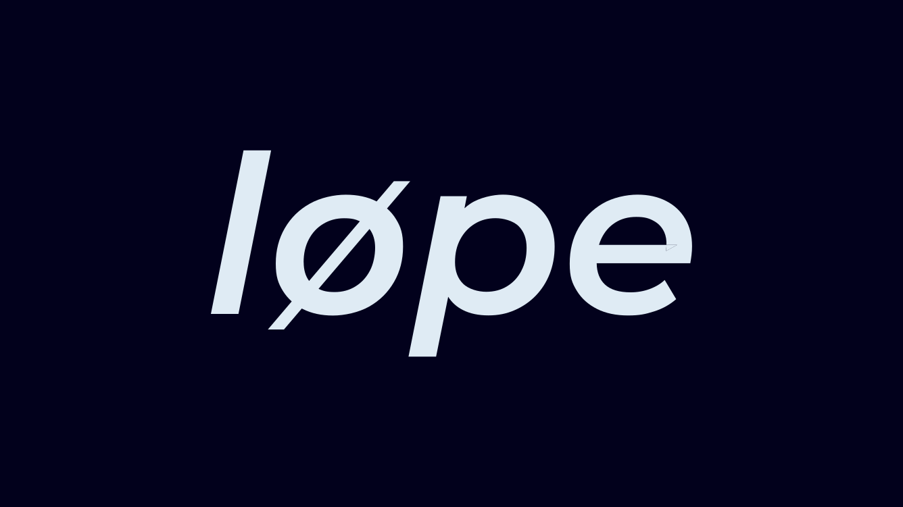
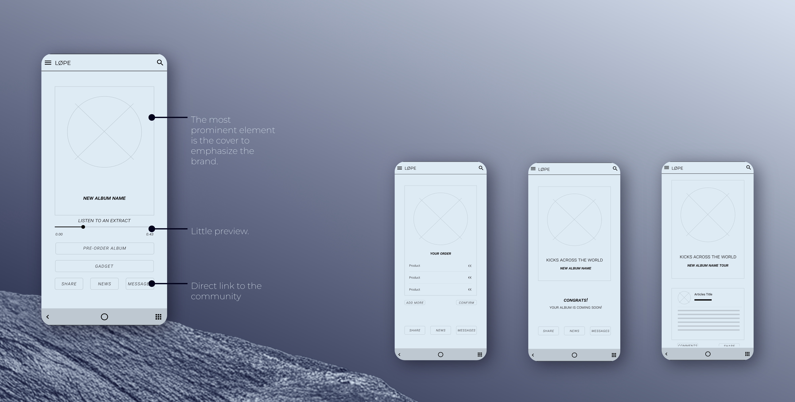
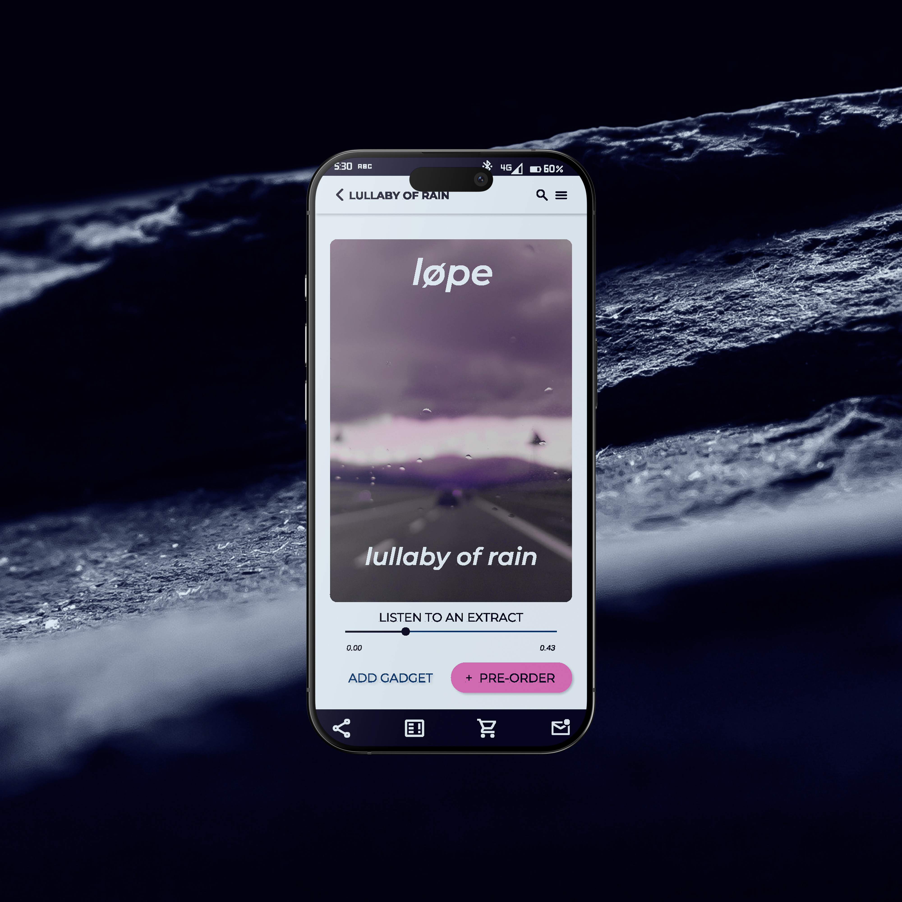

Google Ux Design Certificate at Coursera UX/UI Design Self-initiated UX/UI Designer App Concept, UI Design, Prototype We aim to create a community where users can communicate Right now, an app like this gets used once — to pre-order the album — then forgotten. The goal: give fans a reason to keep opening it, with a space to talk about the band built into the app itself. The design stays minimal — a page built around very few elements, with the album cover taking over as a full background whenever possible, keeping the band's visual identity front and center.
#02011C
#003268
#DFEBF4
#D66BB5


Ease of Navigation
Easy to Use
Well Integrated Functions
Unnecessarily Complex
Support Needed
Inconsistency
1. Most usability study participants need help finding the product they want because of the page organization.
2. Most usability study participants prefer to recheck their data before confirming the purchase.
3. They also prefer to have a complete recall of their purchase during the checkout.


